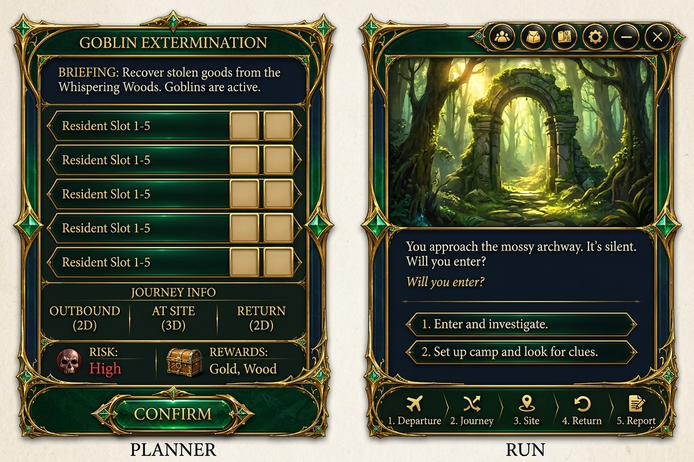
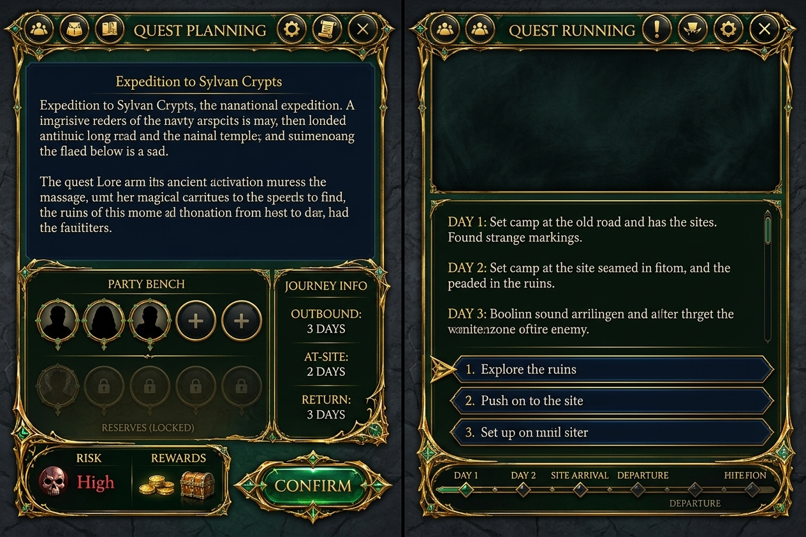
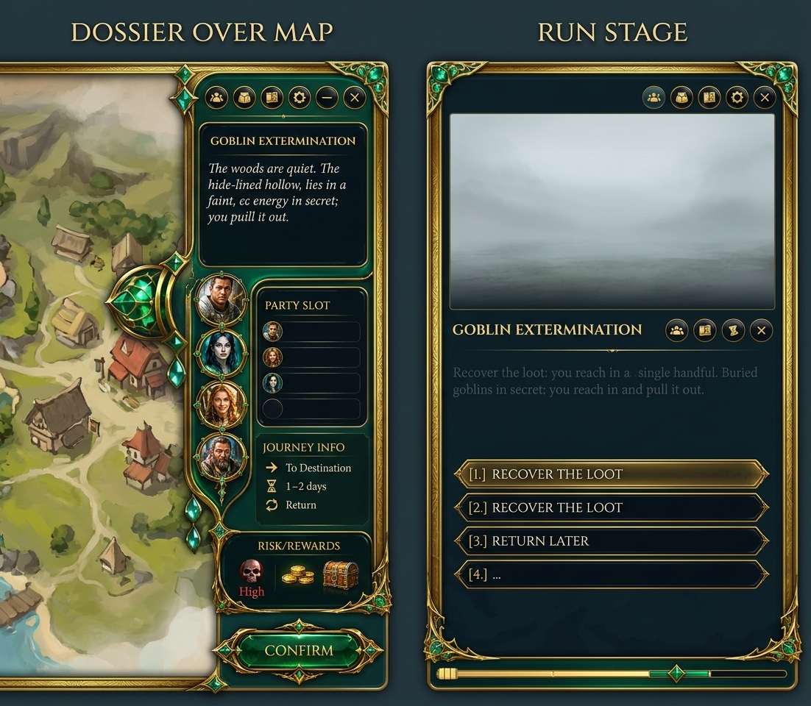

B — Le 3 opzioni planner+run (gate GD — scegli la forma)
Dalla delibera multi-AI sulle tue specifiche complete (8 zone, party variabile 1-5+, pannelli laterali, deck azione fisso, lingua smeraldo fantasy). Ref: produzione + chrome Zanara + mockup Ancient Relic. ← decision board
OPT-1 — Una sola finestra, due stati
Il planner si TRASFORMA nella run (CONFIRM = cambio di stato nella stessa cornice). Il più economico: 1 componente, 1 data model.

OPT-2 — Due pagine dedicate
Planner = pagina sua, Run = pagina sua. Massima pulizia col veto popup, ma 2 componenti e la continuità passa dalla transizione.

OPT-3 — Dossier sulla mappa + Stage per la run
Planner = placca ancorata sulla mappa visibile (contesto conservato); Run = stage dedicato. Il più "world-aware".
